第20章 优先级排序 Prioritization
把多任务竞争下的"先做哪个"从直觉变成算法——以四类稀缺资源为约束，用依赖、截止期、价值密度等信号定序，支持动态重排与预算耗尽时的优雅降级。
一句话定义：当多个任务竞争有限的上下文、token、时间与资金时，用显式的优先级信号（依赖深度、截止时间、价值、风险、成本）为任务定序或重排，并在资源耗尽时按价值保全原则优雅降级。 解决什么问题：智能体面对任务队列时默认行为是先进先出或随手抓取，导致高价值任务饿死、紧急任务错过、预算耗尽时死在鸡毛蒜皮上 ｜ 适用场景：多工单并行处理、长任务队列的自治运行、带预算约束的批量作业、多智能体共享资源池、任何"做不完所有事"的真实系统 ｜ 核心机制：资源建模 → 优先级信号打分 → 依赖拓扑定合法执行序 → 静态排序或动态抢占 → 预算感知降级 ｜ 代价：打分函数本身是新的维护面；动态重排带来饥饿与震荡风险；降级路径需要预先设计与演练。
20.1 模式概述
20.1.1 问题背景：为什么需要这个模式
传统程序处理任务队列的问题早被工程界解决：消息队列按序消费，实时系统按截止期调度，操作系统按优先级抢占。智能体系统把老问题装进了新容器：任务不再是同质的字节流，而是异质的自然语言指令——每个任务的工期、价值、风险都不同且不可精确预知；资源也不再只有 CPU 时间，而是四种性质迥异的稀缺品。默认行为几乎必然失败：先进先出让一个两分钟的小咨询卡在一个两小时的研究任务后面；随手抓取（LLM 在上下文里看到什么就做什么）让花哨的低价值任务挤掉枯燥的高价值任务；一视同仁让所有任务共享预算，结果预算耗尽时高价值任务只完成了一半。
比排序更根本的问题是放弃的艺术。资源永远不够，任何排序算法最终都会遇到"剩下的任务做不完"。没有优先级排序的系统在资源耗尽时的行为是随机的：可能恰好停在大事上，也可能把最后的预算花在装饰性小活上。优先级排序模式同时回答两个问题：资源够用时按什么顺序做（排序），资源不够用时舍弃什么（降级）。二者共享同一套价值判断——排序就是预演放弃。
20.1.2 核心机制：它如何工作
机制分四步。第一步：资源建模。明确本系统的稀缺资源及其预算：上下文窗口（一次能装多少任务状态）、token/资金预算（还能调用多少次模型）、墙钟时间（哪些事有 deadline）、并发额度（多少任务能同时跑）。第二步：信号打分。每个任务带五个优先级信号：依赖深度（多少任务等它完成，阻塞别人者先行）、截止时间（距 deadline 的松弛量）、价值（完成后的收益，常需人工或业务规则赋予）、风险（失败或做错的代价与概率）、成本（预计消耗的资源）。第三步：定合法执行序。依赖关系构成有向图，先做拓扑排序（环即报错）得到偏序，再在每一"波"就绪任务里按优先级分排序——拓扑序保证正确性，优先级保证效率。第四步：执行与重排。静态方案一次排序后顺序执行，简单可预测；动态方案每完成一个任务就重算剩余队列（新任务到达、截止期逼近、上游失败都可能改变排序），必要时允许高优先级任务抢占低优先级任务。
预算耗尽时的优雅降级是收尾机制：每个关键任务预配降级阶梯（完整版→简化版→占位回复），当剩余预算不足以跑完整版时，自动选择"剩余预算内价值最高"的执行档位，并在产出中打降级标记。降级的排序原则是价值保全：宁可所有任务都完成在 70% 质量，也不要一半任务 100%、一半任务 0%。

20.1.3 与相邻模式的关系与组合
与并行化（第 3 章）是"定序与并发"的分工：拓扑排序产出的每一波就绪任务正是并行化的输入——依赖图决定"谁必须等谁"，波内任务并行执行，并行宽度由并发额度这一稀缺资源决定。LLMCompiler 的任务 DAG 并行调度是二者结合的代表。与资源感知优化（第 16 章）是"排序与定价"的配合：本章把成本作为排序信号之一，第 16 章决定每个任务用哪个档位的模型执行——联合起来才是完整的预算管理（"先做哪个"+"每个用多贵的模型"）。与规划（第 6 章）的关系在层次上：规划把单个目标展开成任务 DAG，本章决定 DAG 上任务的执行顺序与资源分配。与异常处理（第 12 章）的接口在预算上：任务失败消耗的重试预算必须计入其成本信号，防止"失败任务靠无限重试霸占预算"。与多智能体（第 7 章）的关系在资源共享：多个 agent 竞争同一模型配额或工具限流时，需要一个全局仲裁者按本章机制分配——先来先服务在多 agent 场景下退化为随机。
20.2 源起：它从哪里来
优先级排序不是智能体的发明，而是三个老学科的合流。运筹学给了依赖定序（PERT 网络与 1962 年 Kahn 拓扑排序）；实时系统给了 EDF（1973 年 Liu 与 Layland 证明单处理器可抢占调度最优）与松弛量词汇；决策科学给了「重要×紧急」四象限与 2002 年 UCB1 的 regret 分析。云时代把三条线装进基础设施：SQS、Celery、Airflow 让优先级、重试、DAG 成为托管能力。智能体时代的新东西只有一件：工期与价值要靠估计——BabyAGI 以无优先级自治循环做了反面教材，LLMCompiler 证明 DAG 并行调度省钱省时。
| 年份月 | 事件 | 提出者/机构 | 出处 |
|---|---|---|---|
| 1962-11 | Kahn 拓扑排序算法（波次定序与环检测） | Arthur B. Kahn（西屋电气） | CACM 5(11) |
| 1973 | EDF 最优性与 Liu-Layland 利用率边界 | C. L. Liu & J. W. Layland | JACM |
| 2002 | UCB1：探索预算的对数 regret 上界 | Auer, Cesa-Bianchi, Fischer | Machine Learning 47 |
| 2015-06 | Airflow：DAG 一等公民的工作流调度 | Maxime Beauchemin（Airbnb） | Apache Airflow |
| 2023 | BabyAGI 反面教材与 LLMCompiler 的 DAG 并行调度 | Yohei Nakajima / Sehoon Kim 等 | GitHub · arXiv:2312.04511 |
20.3 发挥的作用：为什么重要
第一，它把有限资源对准最高价值。智能体系统的边际成本是真实的（token 即金钱），排序错误的代价可以直接换算：把预算花在价值密度 0.1 的任务上而不做价值密度 2.0 的任务，等于烧掉了 20 倍的潜在价值。对自治运行的系统（无人值守跑队列），排序就是系统"人格"的体现——它决定了系统在没人盯着时优先讨好谁。
第二，它提供了可解释的资源仲裁。多任务、多 agent、多租户共享资源时，"为什么先做 A 后做 B"必须可回答，否则就是黑箱偏袒。显式的打分函数（依赖、截止期、价值、风险、成本）让仲裁有据可查、可审计、可调参——这既是工程需要也是治理需要。第 16 章的资源感知优化提供每个任务的"价格"，本章提供"出价顺序"，二者合起来才构成完整的资源市场。
第三，它定义了系统失败时的姿态。没有降级设计的系统在预算耗尽时崩溃或烂尾；有降级设计的系统在同样预算下交出一份"所有承诺都兑现但部分打了折"的答卷。对面向用户的系统，前者是事故，后者是体验。优雅降级与人在回路（第 13 章）衔接：降级触发的任务自动升级为人工待办，形成闭环。
20.4 实际应用与案例
客服工单分级处理。场景：单 agent 消化不断涌入的工单队列。做法：工单按 SLA（VIP 客户 1 小时、普通 24 小时）映射截止期，价值按客户等级与订单金额加权，EDF 式排序处理；高峰期预算吃紧时，低价值工单先降级为模板回复 + 人工待办。关键设计点：截止期相同才比价值，避免"重要但不急"永远压过"急"；每张降级工单必须进人工队列，防止降级变成遗忘。
深度研究 agent 的子问题分配。场景：一个研究报告任务分解出几十个子问题，token 预算有限。做法：规划阶段输出 DAG（部分子问题依赖前置结论），拓扑分波执行；每个子问题按"对最终报告的贡献度 × 信息增益估计 / 预计 token"打价值密度，低密度子问题自动降为跳过或一句话带过。关键设计点：预算消耗过半时触发重估——已获得的发现会改变剩余子问题的价值排序（这正是动态重排的场景）。
编码修复机器人。场景：机器人盯仓库 issue 列表自主修复。做法：依赖深度信号体现为"阻塞多少下游 issue"（从代码依赖图可算），截止期来自 issue 的里程碑标签，风险来自改动文件的核心度；每天为机器人设定 CI 时长预算，预算内按分数排序修。关键设计点：连续两次修复失败的 issue 自动降权（成本信号在惩罚它），防止机器人死磕一个坑。
批量文档处理流水线。场景：数万份合同的批量摘要，夜间窗口有限。做法：文档按"涉及金额 × 是否临近到期"定优先级，拓扑信号来自"这份合同的结论被后续分析引用"；窗口按 p95 工期（评估体系实测，见第 19 章）估算能做多少，排不进窗口的最低优先级文档自动发"已受理、次日出"回执。关键设计点：用实测工期分布而非拍脑袋估计做容量规划，低估 20% 的工期意味着 20% 的任务被承诺又违约。
多 agent 共享模型配额。场景：三个业务 agent 共享每分钟令牌限额。做法：全局仲裁者按"任务 SLA 距离 × 业务权重"给每个待执行调用出价，限流触发时价低者等待。关键设计点：要防饥饿（等待超时自动抬价，即老化机制）；仲裁决策全部打日志，争议时 可回放。
个人助理 agent 的日程缓冲。场景：助理 agent 管理用户的一天，随时插入新请求。做法：艾森豪威尔象限做粗分类（重要且紧急→立即、重要不紧急→排期、紧急不重要→降级给模板、不重要不紧急→拒绝或攒批），象限之内再按价值密度精排。关键设计点：粗分类供人理解（用户要能看懂为什么），精排供机器执行，两层各有受众。
真实世界实例
GitHub Copilot coding agent 的任务排队与异步执行。2025 年 5 月 19 日 GitHub 发布 Copilot coding agent 公测：把 issue（可同时多个）指派给 Copilot 后任务即进入异步队列，在 GitHub Actions 驱动的云端环境里后台执行，多个任务可并行推进，完成后开草稿 PR 等人评审——"指派即入队、按容量并行调度、人只守评审闸口"是任务队列模型在编码智能体上的公开实现。来源：GitHub Blog 官方公告。
工程近似一：AWS SQS 的延迟队列与分档优先级。云消息队列把"先进先出 + 延迟投递 + 按队列分档"做成了托管设施：SQS 支持最长 15 分钟的延迟队列（截止期语义的工程底座），生产系统普遍以"高/中/低三档队列 + 消费者差异化拉取"实现优先级仲裁——这正是本章 EDF 与降级思想的队列设施版。来源：AWS SQS 延迟队列官方文档。
工程近似二：CI 平台的并发组排队。GitHub Actions 用 concurrency group 让同一组的运行排队串行：并发冲突时新的运行默认等待或取消旧的，2026 年 5 月起每组还支持最多 100 个待处理运行的队列——生产团队用它保证"发布流水线永远先于日常构建消化"，是任务优先级仲裁在工程侧最成熟的现成实践。来源：GitHub Actions 并发组官方文档与队列扩容公告。
20.5 深度讲解
20.5.1 四类稀缺资源：性质不同，管理方式不同
上下文窗口是最特殊的资源：它不是"消耗型"而是"挤占型"——同一时刻在处理的任务越多，每个任务能分到的上下文越少，质量随之下降。它的管理策略是控制并发宽度而非排队长度：宁可队列里排一百个任务，也不要二十个任务共享一个窗口。token/资金预算是消耗型资源，特点是不可逆、单价可变（第 2 章路由与第 16 章资源感知决定每个任务用什么价位的模型）；它的管理靠预算账户：每个任务领取预算、消耗记账、超支熔断，账户体系让"今天还剩多少"成为可查询状态而非感觉。墙钟时间的特点是它对所有人流逝速度相同但 deadline 是外部强加的；它的管理靠松弛量（slack = deadline - 预计完工时间）而非剩余时间本身——一个还剩两小时但需要三小时的任务，比还剩十分钟但只需五分钟的任务紧急得多。并发额度（工具限流、API 速率）的特点是"不用即浪费"：窗口内的闲置额度不可存储，因此高并发额度应优先供给不确定的任务（多试几次的探索型任务），低并发额度留给确定性任务。
四类资源互相转换：花更多 token（并行采样多方案）可以省墙钟时间；压缩上下文（摘要历史，第 8 章）可以腾出并发空间。排序算法不必显式优化这种兑换，但预算账户应允许任务间转移——"这个任务值得多花 2 倍 token 换提前 1 小时"应当是可表达的决策。
20.5.2 优先级信号五元组：打分函数的设计与陷阱
五个信号的合成没有万能公式，但有设计纪律。依赖深度通常不该进打分函数而应进拓扑结构——"阻塞很多任务"的正确处理方式是让它尽早进入就绪波次，而不是给它虚高分数（分数会诱导它插队到已就绪的紧急任务前面，但它的紧急性并不因此改变）。截止时间用松弛量度量，且应设为"一票否决级"的信号：松弛量为负（注定迟到）的任务要么立即降级（改为道歉回复 + 人工跟进），要么直接放弃并通知，让它占据队列只会拖累其他任务。价值是最难获取的信号：人工赋值（1-5 星）在组织内可行但主观；业务规则（金额、SLA、客户等级）客观但僵化；第 9 章的学习与适应提供第三条路——从历史完成记录里学"哪类任务的实际价值高"。风险常被忽略：失败代价不对称时（错误回复会触怒 VIP），期望价值要打折扣（价值 × 成功概率）；失败概率可以从第 19 章的评估数据里查表。成本与价值合成价值密度（价值/预计成本），这是资源受限场景的核心比值——它回答"每花一分预算买回多少价值"。
合成时的三个陷阱。一是量纲混乱：把 1-5 的价值分与小时计的工期直接四则运算，结果随单位漂移；先各自归一化再合成。二是虚假精度：给估计值算到小数点后两位，掩盖了"工期估计本身就是猜的"这一事实；排序对单调变换不敏感，用粗糙但稳定的分数足够，精度焦虑应转化为对最不确定任务的抽样重估。三是静态快照：任务入队时打一次分终身使用，而队列是动态的——截止期在逼近、预算在消耗、上游结果在改变下游价值；重排频率应与信号变化速度匹配（20.5.3）。一个常见误解必须拆掉：把优先级队列当作「先来先服务的补丁」——FIFO 公平但笨，于是加个优先级字段修一修。这个理解漏了重点：排序的本质不是「插队」，而是按价值密度（价值/预计成本）重新定义了「先来后到」的度量单位——FIFO 按到达时刻排队，价值密度按「每单位预算买回多少价值」排队；前者是历史事实，后者是经济判断。价值密度 ρ = V/C（V 为完成价值，C 为预计成本），是资源受限场景的核心比值。三个反例说明「高价值」不等于「先做」：其一，价值 5、成本 100 的任务要排在价值 3、成本 10 的任务之后（ρ=0.05 对 0.3）——预算只够做几件事时，先做密度高的总产出更大；其二，成功概率低的高价值任务要让位（期望价值 = V×p，成功率 20% 的「价值 5」实为期望 1，低于稳成的「价值 2」）；其三，价值随时间衰减的高价值任务（错过窗口就失去意义的分析报告）要让位给临期的中价值任务——价值密度要乘时间贬值率。高价值高成本任务的正确位置由机会成本决定：只有当它挤占的预算不伤害更高密度的任务时，才轮得到它先做。
20.5.3 静态排序、动态重排与抢占的代价
静态排序（一次排序、顺序执行）的优点是可预测、可审计、实现简单，缺点是对变化失明：新到的紧急任务要排到队尾，上游失败后下游任务仍按原计划空转。动态重排（每步重算就绪队列）捕获这些变化，但引入三个经典调度病理。饥饿：高价值任务源源不断时，低价值任务永远轮不上——对策是老化机制（等待时间计入优先级，等待越久分数越高），Auer 等人的 UCB 分析给了理论参照：给"不确定"本身分配预算（log 项），保证每个任务被访问的频率有下界。震荡：两个任务分数接近且交替领先时，动态重排可能在二者间来回切换，浪费上下文（每次切换都要重载任务状态）——对策是迟滞带（分数差超过阈值才交换）与最小驻留时间。优先级反转：低优先级任务持有高优先级任务需要的资源（比如占着工具锁），高优先级任务反被阻塞——操作系统的解法（优先级继承）在 agent 场景对应为：被阻塞的高优任务应触发阻塞源的提权。抢占（中断正在执行的低优任务）在 agent 场景代价高于操作系统：任务状态要序列化回存、上下文要切换，且被抢占的任务未必能干净地半途暂停。实践取舍是波间抢占：不中断执行中的任务，但在每个拓扑波次之间重算队列——这已能覆盖 90% 的重排需求，代价仅为每个波次一次排序。
EDF 的最优性是有边界的，边界就是迁移到 agent 的适配条件。Liu 与 Layland 1973 年的框架给出一组精确数字：在单处理器、可抢占、任务相互独立、截止期可知的条件下，动态优先级的 EDF 是最优调度——只要总利用率不超过 1（100%），所有可满足的任务集都能按时完成；对照之下，静态优先级的 RM 需要总利用率压在 n(2^(1/n)−1) 以下，任务数多时收敛到 ln 2 ≈ 69.3%（Liu & Layland 1973, JACM）。这 30 个百分点的差距，就是「按截止期动态排序」对「固定优先级」的理论溢价，也是本章把截止期松弛作为一票否决级信号的理论依据。但迁移到 agent 场景要认清条件何时失效：过载（利用率超 1）时 EDF 的失效是灾难式的——deadline miss 连锁扩散、可能拖垮全部任务，必须配准入控制（本章的降级阶梯就是准入控制的 agent 版）；不可抢占段（长工具调用中途无法暂停）使实时保证失效——所以本章只做波间抢占；多处理器/多 agent 共享配额时最优性不再成立（多处理器调度至今没有达到 Liu-Layland 边界的通用算法）；工期与价值靠估计时，估计误差直接污染松弛量——工期系统性低估 20%，等于悄悄把利用率推过 1。
老化（aging）为什么能解饥饿：饥饿的本质是「等待时间不在信号里」——排在队尾的任务无论等多久分数都不变，于是一轮轮被新到的高分任务插队。老化把等待时间本身计入分数（如每等一分钟给分数加一个固定增量，或按 UCB 思想给「久未尝试」发置信红利），等待越久分数越高，迟早越过任何新到任务——每个任务的等待时长由此有了上界。上界多大有理论参照：Auer 等人证明 UCB1 的期望 regret 上界为 O(ln n)，每条次优臂被多拉的次数约为 8·ln n/Δ²（Δ 是它与最优臂的差距，Auer et al. 2002, Machine Learning 47）——翻译成调度语言：为「不确定/久等」付出的探索成本有对数上界，不会随队列变长而爆炸。工程配比是老化增量必须小于真实的价值差：增量太大，低价值任务靠躺平等到高优先级；增量太小，退化为变相饥饿。

20.5.4 拓扑排序：正确性的地基
Kahn 算法（1962 年发表，PERT 网络分析的副产品）至今是标准解：反复摘除入度为零的节点，摘不完全即有环。工程要点有三。环检测是错误路径不是理论细节：LLM 生成的任务依赖（第 6 章规划器的输出）出现"A 依赖 B、B 依赖 A"并不罕见，必须在排序阶段报错并定位环上的任务，而不是死循环。波次即并行边界：拓扑排序天然给出分层（第一波是所有无依赖任务，第二波是仅依赖第一波的任务……），每层内部无依赖可全并行——这就是第 3 章并行化与 LLMCompiler 式 DAG 调度的执行模型。拓扑序与优先级的合成方式是"波内排序"：拓扑序负责合法性（跨波不可乱序），优先级分只在同一波内决定先后——不要让优先级跨波插队，那等于破坏依赖。动态加入任务时不必全图重排：增量更新受影响节点的入度与波次即可，任务量在百级以下时全量重排也足够便宜。
20.5.5 预算耗尽时的优雅降级
降级设计的核心是预先承诺的放弃。每个重要任务预配降级阶梯：完整执行（价值 1.0、成本 1.0）→ 简化执行（如换小模型、减采样次数，价值约 0.6、成本约 0.3）→ 占位产出（模板回复 + 人工待办，价值 0.2、成本趋零）。预算监控器持续对账：当剩余预算不足以让队列中所有任务走完当前档位时，按价值保全原则重新分配——通常的规则是"先保广度后保深度"：让所有任务至少达到简化档，再让剩余预算给高密度任务升级完整档。这与"头任务吃满预算、尾任务颗粒无收"的自然行为形成对照，后者正是没有降级设计的系统在预算耗尽时的默认结局。
降级的工程纪律：降级必须打标（产出与 trace 标注 degraded 与原因，第 12 章与第 19 章的观测约定在此交汇），否则降级悄然成为常态而无人知晓；降级不是静默丢弃（用户侧要么收到降级产出并被告知，要么收到明确的"已转人工"）；降级路径要演练（与第 12 章的故障演练同理——从没跑过的降级代码等于不存在）。最后一条是反直觉的：有时正确动作是砍掉整个任务而非降级——价值密度低到连简化档都不值得时，占位产出只是给失败化妆，直接报告"本预算下未执行、原因、恢复条件"更诚实。
20.5.6 失效模式与反模式
五种典型失效。打分函数腐化：业务演变后打分权重没人记得当初为什么这么设，也没人敢改——对策是把权重配置化、每次调整留变更记录，并把"排序决策回放"做成例行审计。截止期通胀：业务方学会把所有 deadline 都标成"今天"以抢占队列——对策是截止期与外部事件绑定（SLA 系统而非人工输入），过期惩罚与信用机制。价值信号寻租：任务提交者高报价值——对策是事后校准（完成后的实际价值回填，长期高报者的赋值降权）。降级依赖症：系统发现降级总是能过，逐渐常态化降级以省成本——对策是监控降级率并设上限告警（第 19 章）。拓扑洁癖：为不存在依赖的任务硬造依赖以图省心，DAG 退化为链表，并行度归零——依赖应来自数据流的真实约束。
反模式清单：先进先出冒充排序（队首阻塞）；所有任务同一优先级（等于没有）；优先级只有高低两档（分辨率不足以仲裁真实冲突）；重排无迟滞（震荡烧上下文）；预算只算 token 不算时间与并发；降级阶梯没写就用（临场现想的降级就是没有降级）。何时可以不用：单任务系统（无可排序之物）；任务天然同质且都重要（批处理、按序消化即可）；资源充裕到排序成本超过排序收益——但生产系统的经验是第三种情况比想象中罕见。
20.5.7 怎么用：运用判断
适用信号：任务队列出现以下特征就该上本章机制——任务异质（工期、价值、风险差异大）；资源有真实预算（token、资金、窗口时间、并发额度）；「做不完所有事」是常态而非意外；多个请求方竞争同一配额；用户能感觉到「系统在先处理谁」。边界条件：单任务系统没有可排序之物；任务同质且同等重要的批处理按序消化即可；资源充裕到排序成本超过排序收益的场景在生产中比想象中罕见。另要记住 EDF 的适配边界（20.5.3）：工期估计系统性偏差超过两成时，先修估计再谈排序。
与最近替代方案的对比：
| 维度 | 本章（拓扑+价值密度+降级阶梯） | 纯 FIFO 消息队列 | 固定优先级档位（RM 式） |
|---|---|---|---|
| 依赖正确性 | 拓扑分波，成环报错定位 | 无依赖概念，先后可能颠倒 | 同左 |
| 资源利用率 | EDF 条件内理论上界 100% | 高但与价值无关 | 静态优先级保守，利用率过 69.3% 即可能误期 |
| 预算耗尽行为 | 预配降级阶梯，价值保全 | 消费到哪算哪 | 高档活着，低档饿死 |
| 可解释性 | 打分函数可审计可回放 | 按到达序，天然可解释 | 档位冲突时无法仲裁 |
落地三步：第一步（本周）：给任务加三个显式字段——依赖列表、截止时刻、价值估计（1-5 足够），用 Kahn 算法做拓扑分波，环即报错定位。第二步（本月）：波内按 价值密度×截止期松弛 排序，加老化增量与迟滞带；给前三类重要任务各写一条降级路径并演练一遍。第三步（本季度）：预算账户化（token/时间/并发分开记账），接第 19 章的实测工期与成功率回填价值与成本信号，让排序随数据自动校准。
20.6 工程落地：核心源码与讲解
20.6.1 核心实现：预算感知的波次调度器（片段讲解）
主程序拆为四个片段（Python 3.10+）。按序拼接即完整可运行程序：纯算法演示，零依赖、无模型调用，无密钥也能跑；如需 LLM 估计工期与价值，把全书统一的 llm() 接入辅助函数加在文件开头即可，调度核心不变。四个片段均采用模块级函数与数据类，各自独立通过语法检查，拼接后即为完整调度器。
片段 1/4：任务模型与环错误
"""DAG + 截止期 + 价值密度的优先级调度器，带预算感知优雅降级（框架无关实现）。"""
from __future__ import annotations
from dataclasses import dataclass
from typing import Callable
@dataclass
class Task:
"""调度单元：依赖 + 截止期 + 价值 + 两档执行（完整档与降级档）。"""
tid: str
deps: list[str]
est: float # 完整档预计工期（分钟），也是默认成本单位
deadline: float # 截止时刻（相对开始的分钟数）
value: int # 完整档价值 1-5
run: Callable[[], str] | None = None # 完整执行
run_degraded: Callable[[], str] | None = None # 降级执行（更便宜、价值更低）
degraded_value: int = 1 # 降级档价值
class CycleError(Exception):
"""依赖图存在环。LLM 生成的依赖常出环：环是错误路径，不是理论细节。"""
▸ 代码怎么读：Task 的字段就是 20.5.2 五信号的落点——deps 承载依赖（进拓扑结构而非打分函数），deadline 承载截止期，value 承载价值；run_degraded/degraded_value 把 20.5.5 的降级阶梯做成一等公民，没有降级档的任务等于没有退路。est 既是工期也是默认成本单位，真实系统里换成 token 或金额账户即可，score() 与 run() 的逻辑不变。CycleError 的注释是刻意的：LLM 生成的依赖图常出环，环检测是错误路径而非理论装饰。
片段 2/4：Kahn 分波（拓扑定合法性，环即报错定位）
def topo_waves(tasks: dict[str, Task]) -> list[list[str]]:
"""Kahn 分波：拓扑定合法性（跨波不可乱序）；摘不完全即有环，报错定位环上任务。"""
indeg = {t: 0 for t in tasks}
succ: dict[str, list[str]] = {t: [] for t in tasks}
for tid, task in tasks.items():
for d in task.deps:
if d not in tasks:
raise KeyError(f"任务 {tid} 依赖不存在的 {d}")
succ[d].append(tid)
indeg[tid] += 1
wave, waves = [t for t, n in indeg.items() if n == 0], []
while wave:
waves.append(sorted(wave))
nxt: list[str] = []
for t in wave:
for s in succ[t]:
indeg[s] -= 1
if indeg[s] == 0:
nxt.append(s)
wave = nxt
if sum(map(len, waves)) != len(tasks):
stuck = sorted(t for t, n in indeg.items() if n > 0)
raise CycleError(f"依赖成环，无法调度，环上任务：{stuck}")
return waves
▸ 代码怎么读：topo_waves() 是教科书 Kahn 算法的工程版，两处防御值得注意：依赖不存在的任务直接 KeyError（脏数据在入口拦下，而不是执行中炸）；摘不完全时把环上任务列出来报错——定位环比知道有环重要得多。返回值是「波次列表」而非线性序列，波次即并行边界（第 3 章），第一波可全并行。任务量在百级以下时全量重排足够便宜，动态加任务可增量更新入度而不必全图重算。
片段 3/4：价值密度×截止期松弛打分，预算对账三路分支（含降级）
def score(task: Task, now: float) -> float:
"""优先级分 = 价值密度 × 紧急度；松弛为负即注定迟到，一票否决级紧急。"""
slack = task.deadline - now - task.est
density = task.value / max(task.est, 0.1) # 价值密度：每分钟买回多少价值
urgency = 10.0 if slack <= 0 else 1.0 + 1.0 / (1.0 + slack / 60.0)
return density * urgency
def run(tasks: dict[str, Task], budget: float, hysteresis: float = 0.5) -> dict:
"""逐波执行：波内每完成一步就重算分数（动态重排）；预算对账决定执行档位。"""
now, log, results = 0.0, [], {}
for wave in topo_waves(tasks):
pending = sorted(wave)
while pending:
ranked = sorted(pending, key=lambda t: -score(tasks[t], now))
pick = ranked[0]
if len(ranked) > 1 and score(tasks[ranked[1]], now) > \
score(tasks[pick], now) + hysteresis:
pick = ranked[1] # 迟滞带：次名显著更高才交换
task = tasks[pick]
if task.est <= budget: # 预算对账：三路分支
out, mode = task.run(), "完整"
spend, got = task.est, task.value
elif task.run_degraded and task.est * 0.3 <= budget:
out, mode = task.run_degraded(), "降级"
spend, got = task.est * 0.3, task.degraded_value
else: # 任何档位都放不下：诚实放弃
log.append(f"[放弃] {pick}：剩余预算 {budget:.0f} 分钟不足")
pending.remove(pick)
continue
budget -= spend
now += spend
results[pick] = out
log.append(
f"[{mode}] {pick}（价值{got}，耗时{spend:.0f}分，剩余预算{budget:.0f}，"
f"距截止{task.deadline - now:+.0f}分）")
pending.remove(pick)
return {"results": results, "remaining_budget": budget, "log": log}
▸ 代码怎么读：score() 是 20.5.2 合成公式的落地：密度用 max(est, 0.1) 防除零；紧急度在松弛为负时跳到 10（一票否决级），以 60 分钟为参考尺度做饱和衰减——超过一小时后紧急度趋近常数，避免「剩 8 小时」与「剩 80 小时」被放大成 10 倍分差。run() 的三路分支对应预算对账的三个出口：完整档、降级档（0.3 倍成本是演示值，按你的简化档实测校准）、诚实放弃——放弃必须写进 log 而非静默丢弃。迟滞带只在次名分数显著更高时交换，防 20.5.3 的震荡。
片段 4/4：演示主程序（发布准备日 + 环检测自检）
if __name__ == "__main__":
tasks: dict[str, Task] = {
"slides": Task("slides", [], est=90, deadline=300, value=3,
run=lambda: "完整版幻灯片", run_degraded=lambda: "要点提纲版",
degraded_value=2),
"test": Task("test", [], est=30, deadline=180, value=5, run=lambda: "全量回归通过"),
"fix": Task("fix", ["test"], est=60, deadline=240, value=5,
run=lambda: "bug 已修复并复测",
run_degraded=lambda: "临时热修复，完整修复建 issue 跟进", degraded_value=3),
"blog": Task("blog", ["slides"], est=45, deadline=600, value=2,
run=lambda: "发布长文", run_degraded=lambda: "改为社媒短帖", degraded_value=1),
"lunch": Task("lunch", [], est=40, deadline=210, value=2, run=lambda: "完整午休"),
}
print(f"拓扑分波：{topo_waves(tasks)}\n")
out = run(tasks, budget=200)
for line in out["log"]:
print(line)
assert "fix" in out["results"] and "test" in out["results"], "高价值链路必须完成"
try: # 错误路径也要演示：环检测
topo_waves({"a": Task("a", ["b"], est=1, deadline=9, value=1, run=lambda: ""),
"b": Task("b", ["a"], est=1, deadline=9, value=1, run=lambda: "")})
except CycleError as e:
print(f"\n环检测验证：{e}")
▸ 代码怎么读：演示场景是「预算 200 分钟的发布准备日」：slides 有降级档、test 无（关键任务不留退路）、fix 依赖 test（拓扑序）、blog 依赖 slides（被间接调度）、lunch 纯竞争。跑一遍能看到：高价值链路 test→fix 优先消化预算，低密度任务被降级或放弃——这正是「排序就是预演放弃」。末尾的环检测自检把 a、b 互相依赖塞进去，应得到列出环上任务的 CycleError；assert 保证高价值任务在预算内完成，是留给读者的验收线。
20.6.2 框架差异速览（任务队列与调度设施）
第二个框架完整程序不再给出——本章能力的现成设施差异一张表说清：
| 设施 | 对应能力 | 与本章实现的差异 |
|---|---|---|
| LangGraph Send API | Send("worker", payload) 运行时派发任意多并行实例 |
承接「拓扑分波、波内并行」的执行模型；优先级与降级需自建 |
| Celery | priority 参数 + countdown/eta 延迟投递 |
分布式队列的优先级与截止期；依赖 DAG 与预算降级需外置 |
| Apache Airflow | DAG + priority_weight + pool 槽位 |
批作业工作流的依赖定序与并发闸门；粒度是任务级而非 token 级 |
| AWS SQS | 延迟队列（≤15 分钟）+ 高/中/低分档队列 | 托管消息层的截止期与分档；降级阶梯与价值密度在消费侧实现 |
20.6.3 生产化改造清单
- 错误处理：拓扑环、未知依赖、任务执行异常三路都必须显式报错或降级；环报错要列出环上任务，执行异常计入该任务的风险信号与重试预算。
- 超时：每个任务带工期上限，超时按失败处理并触发降级阶梯；调度器自身重排频率设上限，防止病态图导致的排序风暴。
- 并发：波内并行宽度受并发额度约束（信号量）；多 worker 场景下调度决策集中仲裁，避免各自为政。
- 状态持久化：队列、已完成集合、预算账户落检查点（第 12 章），崩溃后从检查点恢复且已执行任务凭幂等记录跳过。
- 可观测：每条调度决策记录"当时分数、被跳过的候选、原因"，支持回放审计；队列长度、等待时间分位、降级率为一等指标。
- 预算治理：token、时间、并发三类预算分账户记账；预算消耗速率进监控，异常增速（重试风暴）触发熔断。
- 信号校准：工期与价值估计定期与实测对账（第 19 章的 metric 提供实测值），系统性高估/低估自动校正。
- 老化与防饥饿：等待时间计入优先级；任何任务的等待时长设硬上限，超限强制执行或升级人工。
- 成本控制：重排只在波间进行（波内抢占代价高）；打分函数保持 O(n log n)，任务量上千时增量化。
20.7 概览 / 核心要点 / 结论
本章小结
优先级排序把"先做哪个"从直觉升级为算法：先承认四类性质迥异的稀缺资源（上下文窗口挤占型、token/资金消耗型、墙钟时间外部强加型、并发额度易逝型），再用依赖深度、截止松弛、价值、风险、成本五类信号打分；拓扑排序（Kahn，1962）保证执行序的合法性，波内优先级与波间动态重排（借鉴 EDF 的截止期思想与 UCB 的探索预算思想）保证效率与适应性，预算耗尽时按价值保全原则沿预配的降级阶梯优雅收场。这一整套机制的零件全部来自运筹学、实时系统与队列工程几十年的积累，agent 工程的新贡献只是让"工期与价值的估计"也可以外包给模型。
核心要点
- 四类稀缺资源管理方式不同：上下文靠控并发宽度，预算靠账户制记账熔断，时间靠松弛量而非剩余量，并发额度靠"不用即浪费"的分配观。
- 依赖深度进拓扑结构而非打分函数；截止期用松弛量度量且松弛为负时一票否决（降级或放弃，不让死任务拖垮队列）。
- 价值密度（价值/成本）是资源受限场景的核心比值；价值信号要防寻租，用完成后的实际价值回填校准。
- 静态排序可预测，动态重排适应变化；重排要配老化（防饥饿）、迟滞带（防震荡）、波间粒度（避免高代价抢占）。
- Kahn 拓扑排序给出波次结构：波次即并行边界（第 3 章），环是错误路径必须报错定位。
- 优雅降级三纪律：预先配置阶梯（完整→简化→占位）、降级必打标并进监控、降级率超阈值告警；价值密度低过占位档时，诚实放弃优于化妆失败。
- BabyAGI 的教训：能跑的任务队列不等于能用的任务队列——无优先级、无终止控制、无预算的自治循环是事故现场。
- 与第 16 章合体才是完整资源管理：本章定"先做哪个"，资源感知定"每个用多贵的模型"。
结论
排序就是预演放弃。一个系统怎么给任务排序，暴露了它认为什么重要；一个系统在预算耗尽时牺牲什么，暴露了它的真实价值观。把这套价值观从隐性的随机行为变成显性的、可审计的打分函数与降级阶梯，是智能体系统从玩具走向受托责任体的必要一步——用户把资源和时间交给一个自治系统，理应得到"它会像称职的助理一样分轻重缓急"的保证。
20.8 延伸阅读与参考链接
论文 - Kahn 拓扑排序（1962，CACM，波次定序与环检测的源头）：DOI - Liu & Layland 的 EDF（1973，JACM，截止期调度的最优性保证）：DOI - UCB1（2002，"给不确定性定价"的有限时间 regret 分析）：DOI - LLMCompiler（LLM 调用的任务 DAG 并行执行）：arXiv:2312.04511
官方文档与规范 - Apache Airflow（以 DAG 为一等公民的工作流调度）：https://airflow.apache.org/ - Celery 分布式任务队列（优先级/重试/路由）：https://docs.celeryq.dev/ - AWS SQS 延迟队列官方文档：https://docs.aws.amazon.com/AWSSimpleQueueService/latest/SQSDeveloperGuide/sqs-delay-queues.html - GitHub Actions 并发组与排队官方文档：https://docs.github.com/en/actions/writing-workflows/choosing-what-your-workflow-does/using-concurrency - LangGraph Send API（拓扑波次并行派发）：https://langchain-ai.github.io/langgraph/
案例来源 - GitHub Copilot coding agent 公测公告（2025-05-19）：https://github.blog/changelog/2025-05-19-github-copilot-coding-agent-in-public-preview/ - BabyAGI（任务队列 agent 的早期形态与"无优先级"教训）：https://github.com/yoheinakajima/babyagi